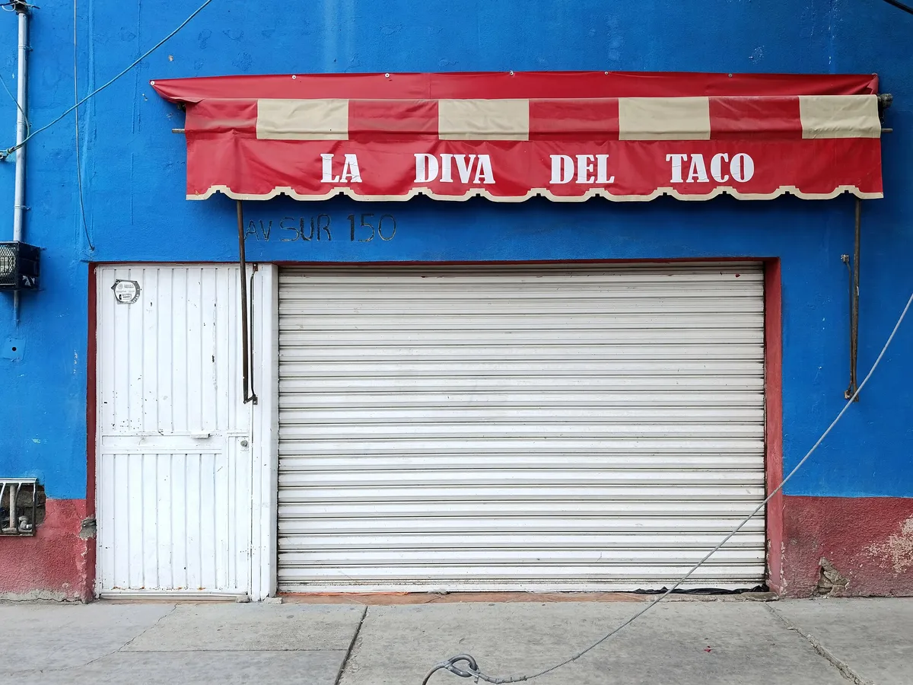

Cómo aparecer en los primeros lugares de Google Maps: guía de SEO local para negocios en México
Cómo decide Google qué negocios mostrar en Maps y 12 acciones de SEO local para que tu negocio en México aparezca en los primeros lugares.
En resumen
- Google ordena los resultados locales por relevancia, distancia y prominencia; no se puede pagar para subir.
- Un Perfil de Empresa verificado, completo y actualizado es la base de todo el SEO local.
- Las reseñas cuentan: Google afirma que más reseñas y valoraciones positivas mejoran el posicionamiento local.
- Fotos reales, horarios correctos y respuestas a reseñas son acciones gratuitas con impacto directo.
Contenido del artículo
Cuando alguien busca «tacos cerca de mí», «dentista en Guadalajara» o «taller mecánico abierto ahora», Google muestra un mapa con tres negocios destacados y, debajo, una lista. Estar en esos primeros lugares puede significar decenas de clientes nuevos cada semana sin pagar publicidad. A eso se le llama SEO local.
En esta guía te explicamos cómo decide Google qué negocios mostrar, con base en su propia documentación, y te damos una lista de acciones concretas para mejorar tu posición en Google Maps.
Cómo decide Google qué negocios mostrar
Google lo explica en su página Cómo mejorar tu posicionamiento local: los resultados locales dependen principalmente de tres factores, que se combinan para encontrar la mejor coincidencia para cada búsqueda.
| Factor | Qué significa | Cómo mejorarlo |
|---|---|---|
| Relevancia | Qué tan bien coincide tu perfil con lo que busca la persona. | Información completa y detallada: categoría, servicios, descripción, atributos. |
| Distancia | Qué tan lejos está tu negocio de la ubicación de la búsqueda. | Dirección correcta y verificada. No se puede «mover», pero sí asegurarte de que esté bien. |
| Prominencia | Qué tan conocido es tu negocio, dentro y fuera de internet. | Reseñas, valoraciones, enlaces y menciones en otros sitios. |
Google también aclara algo importante: no se puede pagar para mejorar el posicionamiento local. Los anuncios existen, pero se muestran aparte y marcados como patrocinados.

Paso 1: crea y verifica tu Perfil de Empresa
Todo empieza con un Perfil de Empresa de Google (antes Google My Business). Es gratis. Al crearlo, Google te pedirá verificar que eres el dueño o representante del negocio, por ejemplo con un video del local o un código. Un perfil verificado tiene más probabilidades de aparecer en los resultados.
12 acciones para subir en Google Maps
1. Usa el nombre real de tu negocio
Escribe el nombre tal como aparece en tu letrero. Las directrices de Google no permiten agregar información innecesaria como eslóganes, ciudades o palabras clave («Tacos El Güero – Los mejores tacos de CDMX»). Hacerlo puede provocar la suspensión del perfil.
2. Elige la categoría principal más precisa
La categoría es una de las señales de relevancia más fuertes. «Taquería» es mejor que «Restaurante» si vendes tacos. Después agrega categorías secundarias que describan servicios reales.
3. Completa todos los campos
Dirección, zona de servicio, teléfono, sitio web, horario, descripción, servicios, productos y atributos como «Wi‑Fi», «acceso para silla de ruedas» o «pago con tarjeta». Cada dato ayuda a Google a entender cuándo mostrarte.
4. Mantén el horario actualizado, incluidos los días festivos
Pocas cosas generan peores reseñas que llegar y encontrar cerrado. Actualiza los horarios especiales para el 16 de septiembre, el Día de Muertos, el 12 de diciembre, Navidad y Semana Santa.
5. Consigue reseñas de forma constante
Google lo dice textualmente: cuantas más reseñas y valoraciones positivas, mejor será el posicionamiento local. La clave es un flujo constante. Te dejamos 15 estrategias para conseguir más reseñas, y una herramienta que facilita todo: la tarjeta NFC para reseñas de Google.
6. Responde todas las reseñas
Google recomienda responder las reseñas porque demuestra que valoras a tus clientes. Responde también las negativas, con calma y soluciones (aquí tienes plantillas para hacerlo).
7. Sube fotos y videos reales con frecuencia
Fachada (para que te reconozcan al llegar), interior, productos, equipo y ambiente. Las fotos auténticas, tomadas con luz natural, transmiten más confianza que las de catálogo.
8. Publica novedades en tu perfil
Las publicaciones de Google te permiten anunciar promociones, eventos o productos nuevos. Mantienen tu perfil activo y dan a los clientes más motivos para elegirte.
9. Agrega productos y servicios con precios
Un menú, una lista de servicios o un catálogo con precios responde dudas antes de que el cliente llame y aumenta la relevancia para búsquedas específicas.
10. Mantén tus datos iguales en todo internet
Que tu nombre, dirección y teléfono sean idénticos en tu sitio web, Facebook, Instagram, directorios y plataformas de delivery. La consistencia ayuda a Google a confiar en la información.
11. Consigue menciones y enlaces locales
La prominencia también se basa en información de la web, como enlaces y artículos. Participa en ferias, patrocina eventos de tu colonia, aparece en guías locales y colabora con negocios vecinos.
12. Ten un sitio web rápido y adaptado al celular
Muchos clientes pasarán de tu perfil a tu sitio. Si la página tarda o se ve mal en el celular, se irán con la competencia. Recuerda que el 97.2% de los usuarios de internet en México se conecta desde un smartphone, según la ENDUTIH 2024 del INEGI.
Lo que miran los clientes antes de elegirte
Aparecer es la mitad del trabajo; la otra mitad es que te elijan. En la encuesta 2026 de BrightLocal, el 68% de los consumidores dijo que solo usa negocios con al menos cuatro estrellas y el 74% busca reseñas recientes, de los últimos tres meses. Un perfil completo, con fotos y reseñas frescas bien respondidas, convierte más visitas en clientes.
Errores que pueden hundir tu perfil
- Palabras clave en el nombre del negocio.
- Direcciones falsas o «sucursales» que no existen.
- Reseñas compradas o incentivadas (lee qué prohíbe Google).
- Horarios desactualizados y teléfonos que nadie contesta.
- Abandonar el perfil durante meses.
Checklist rápido de SEO local
- Perfil de Empresa creado y verificado
- Nombre real, sin palabras clave
- Categoría principal precisa y secundarias relevantes
- Horario normal y horarios especiales actualizados
- Al menos 10 fotos reales y actuales
- Enlace de reseñas en tarjetas, WhatsApp y tickets
- Todas las reseñas respondidas
- Datos iguales en sitio web, redes y directorios
Conclusión
El SEO local no es magia ni requiere grandes presupuestos: es constancia. Un perfil completo, un flujo continuo de reseñas reales y respuestas atentas son las tres palancas que más dependen de ti. Empieza hoy con la que te resulte más fácil y revisa tu progreso cada mes.
Preguntas frecuentes
¿Cuánto cuesta aparecer en Google Maps?
Crear y verificar tu Perfil de Empresa en Google es gratis. Google aclara que no se puede pagar para mejorar el posicionamiento local; los anuncios de Google son un producto aparte y se marcan como patrocinados.
¿Cuánto tarda en verse el resultado del SEO local?
Los cambios en el perfil (horario, categoría, fotos) se reflejan en días. Subir posiciones de forma sostenida suele tomar semanas o meses, porque depende de acumular reseñas, menciones y actividad constante.
¿Por qué mi competencia aparece antes aunque esté más lejos?
Porque la distancia es solo uno de los tres factores. Un negocio más lejano puede ganar por relevancia (perfil más completo y categoría precisa) o por prominencia (más reseñas, mejor calificación y más menciones en la web).
¿Debo usar palabras clave en el nombre de mi negocio?
No. Usa el nombre real de tu negocio, tal como aparece en tu letrero y documentos. Agregar palabras clave al nombre va contra las directrices de Google y puede provocar la suspensión del perfil.
Fuentes y referencias
- Cómo mejorar tu posicionamiento local en Google — Ayuda de Perfil de Empresa de Google
- Directrices para mostrar adecuadamente tu empresa en Google — Ayuda de Perfil de Empresa de Google
- Perfil de Empresa de Google — Google
- Gestionar las reseñas de los clientes — Ayuda de Perfil de Empresa de Google
- Local Consumer Review Survey 2026 — BrightLocal
- Encuesta Nacional sobre Disponibilidad y Uso de Tecnologías de la Información en los Hogares (ENDUTIH) 2024 — INEGI
Las marcas mencionadas pertenecen a sus respectivos dueños. Las imágenes provienen de Wikimedia Commons y se usan según su licencia libre, indicada en cada pie de foto.
Diseñamos y programamos tarjetas NFC con código QR para negocios de todo México. Escribimos estas guías con base en la documentación oficial de Google, Apple y Android y en lo que aprendemos todos los días con nuestros clientes.
Contáctanos · Cómo funcionan nuestras tarjetas